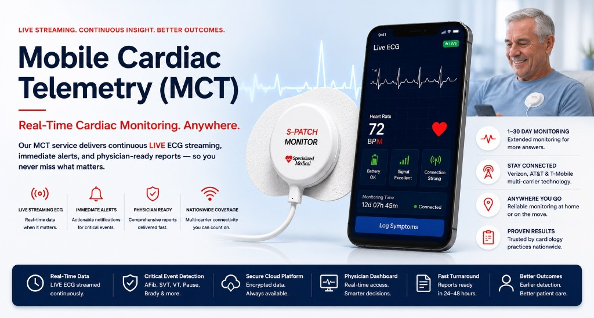

Automatic event detection
Predefined rhythm events can be captured even when the patient is asymptomatic or unable to activate the monitor.

LIVE ECG STREAMING. ATTENDED SURVEILLANCE. PHYSICIAN-READY INFORMATION.
Specialized Medical provides up to 30 days of ambulatory ECG monitoring with automatic and patient-triggered event capture, physician-prescribed notification protocols, continuous test-status visibility, Stay Connected multi-carrier technology and physician-ready reporting.

Mobile Cardiac Telemetry is a temporary ambulatory ECG monitoring modality that combines ongoing computerized rhythm analysis with transmission of ECG-triggered and patient-selected events to an attended surveillance center. MCT may be worn for up to 30 days when the treating physician needs a longer monitoring window and the ability to review qualifying findings while the study is still active. MCT is also known as mobile cardiac outpatient telemetry (MCOT). MCT is not the same as inpatient telemetry and does not replace emergency evaluation.[1][2]
Specialized Medical supports cardiac monitoring services with LIVE ECG monitoring, prescribed notification protocols, continuous operational visibility and physician-ready reporting.
Unlike a short-duration Holter study, MCT can extend ambulatory monitoring for up to 30 days. Unlike a patient-activated event monitor alone, MCT can analyze rhythm data and identify predefined events even when the patient does not recognize symptoms or press a button. Qualifying findings may be presented during the active study according to the physician’s prescribed notification protocol, while patient-triggered symptoms can be matched to the corresponding ECG.[1][2]
Predefined rhythm events can be captured even when the patient is asymptomatic or unable to activate the monitor.
Patients can log symptoms so the physician can compare the reported experience with the ECG at that time.
Qualifying findings may be presented while monitoring is still underway, according to the prescribed protocol.
A 1-30 day monitoring period increases the opportunity to capture intermittent rhythm disturbances that may not occur during a short test.
ECG-triggered and patient-selected events are transmitted to an attended monitoring environment for analysis and documentation.
Published evidence supports the use of ambulatory ECG monitoring for intermittent symptoms, asymptomatic arrhythmia detection, treatment-response assessment and selected post-procedure populations. The page presents results as study-specific findings, not as guarantees that every patient or every MCT system will achieve the same result.
In a 17-center randomized study of 266 patients with syncope, presyncope or severe palpitations after a nondiagnostic 24-hour Holter study, a diagnosis was reached in 88% of patients assigned to MCOT compared with 75% assigned to a standard loop event monitor. Clinically significant arrhythmias were identified in 41% of the MCOT group compared with 15% of the loop-monitor group. These results apply to the studied population and should not be presented as a universal performance guarantee.[3]
A separate clinical series evaluated MCOT for palpitations, presyncope, syncope and antiarrhythmic-therapy assessment. The investigators reported clinically significant asymptomatic arrhythmias and found that 7 of 21 patients monitored for medication titration had dosage adjustments during outpatient monitoring. The treating physician, not the monitoring service, determines whether medication should be started, changed or stopped.[4]
Defines external mobile cardiovascular telemetry as concurrent computerized real-time analysis with ECG-triggered and patient-selected events transmitted to an attended surveillance center; may be worn up to 30 days.
CMS A59268 / L40244
AECG is used for palpitations, syncope, AF detection, therapy-response assessment and selected outpatient antiarrhythmic monitoring; technology selection should match symptom frequency and clinical need.
Heart Rhythm / Ann Noninvasive Electrocardiol, 2017
MCOT achieved higher diagnostic confirmation and higher clinically significant arrhythmia detection than a standard patient-activated loop recorder in the studied population.
PMID 17318994
MCOT identified asymptomatic arrhythmias and was used during outpatient medication titration; 7 of 21 medication-titration patients had dose adjustments.
PMID 17343724
A standardized 30-day MCT program detected conduction abnormalities requiring pacemaker placement and new AF/flutter after TAVR.
PMID 38388248
The correct monitoring test depends on the physician’s clinical objective, symptom frequency, required monitoring duration and need for information during the active study. Longer duration alone does not make Extended Holter a substitute for MCT when attended surveillance and presentation of qualifying findings during the study are desired.
| Consideration | Holter | Extended Holter | Event | MCT |
|---|---|---|---|---|
| Typical duration | 24-48 hours | 3-14 days | Up to 30 days | Up to 30 days |
| Recording approach | Continuous ECG recording | Continuous ECG recording | Patient-triggered and/or auto-triggered event capture | Continuous computerized analysis with ECG-triggered and patient-selected events |
| When clinical findings are generally presented | After final report | After final report | During the test when qualifying findings meet the prescribed protocol | During the test when qualifying findings meet the prescribed protocol |
| Specialized Medical LIVE operational visibility | Yes for LIVE version | Yes for LIVE version | Yes | Yes |
| Best-fit question | What occurred during a short, defined window? | What occurred during a longer continuous-recording window? | Can intermittent symptoms/events be captured over time? | Can intermittent and asymptomatic findings be actively surveilled and presented during the study? |
Operational visibility means Specialized Medical can monitor device and transmission status. Clinical surveillance means qualifying ECG findings may be presented during the test. All LIVE test types can have operational visibility, while MCT and Cardiac Event Monitoring have active-study clinical notification workflows. Compare also with Holter monitoring and Long-Term Holter monitoring.
MCT may be considered when symptoms or suspected arrhythmias are intermittent, when a short monitoring period has been nondiagnostic, when automatic detection of asymptomatic events is important, or when the physician needs qualifying findings presented during an active ambulatory study. Patient selection, monitoring duration and notification parameters remain physician decisions and must follow payer and institutional requirements.[1][2]
Depending on the patient, device configuration, signal quality and physician-prescribed parameters, MCT may record and present findings such as atrial fibrillation or flutter, supraventricular tachycardia, ventricular tachycardia or wide-complex tachycardia, significant bradycardia, pauses, atrioventricular block, premature atrial or ventricular beats, and symptom-correlated sinus rhythm. The treating physician interprets the ECG and determines clinical significance.
Atrial fibrillation, atrial flutter, atrial tachycardia and other supraventricular rhythms.
Ventricular tachycardia, wide-complex tachycardia and ventricular ectopy.
Bradycardia, pauses, second-degree or high-grade AV block and complete heart block.
Palpitations, dizziness, shortness of breath, chest discomfort, presyncope or syncope correlated with ECG.
Automatically detected rhythm events that occur without a patient-reported symptom.
Compliance wording
Use records, detects, identifies ECG findings, captures, or presents qualifying findings. Do not state that the monitor independently diagnoses, treats, prevents or guarantees avoidance of hospitalization, stroke, sudden death or pacemaker implantation.
Because qualifying findings can be reviewed while monitoring is still underway, a treating physician may use MCT information when evaluating the response to a medication initiation, dosage change, discontinuation or other rhythm-management strategy. When clinically appropriate, the physician may change therapy during the monitoring period and observe subsequent ECG patterns. Published evidence and expert consensus support ambulatory ECG monitoring for treatment-response assessment and selected outpatient antiarrhythmic monitoring.[2][4]
Required safety statement
MCT does not replace a 12-lead ECG, laboratory testing, QT assessment, inpatient observation or any drug-specific monitoring required by labeling, guidelines or institutional protocol. Certain antiarrhythmic medications must be initiated in a monitored inpatient setting. All medication decisions belong to the treating clinician.
MCT may be used in selected patients after arrhythmia procedures or transcatheter aortic valve replacement when the treating team wants extended ambulatory surveillance and active-study notification of qualifying findings. Specialized Medical’s MCT system is especially well suited to post-TAVR care because it combines attended LIVE ECG monitoring streaming, rapid physician-prescribed notification of qualifying arrhythmias, proactive patient support and Stay Connected multi-carrier technology designed to help maintain transmission as patients recover at home, including in many rural areas. After TAVR, the system may identify delayed high-grade AV block, complete heart block, bradycardia, pauses and new atrial fibrillation or flutter. This provides a high level of post-discharge rhythm surveillance and an important added layer of protection during a clinically significant recovery period. Patient selection and monitoring duration remain under the direction of the structural heart team. See the dedicated post-TAVR cardiac monitoring page for the full evidence and workflow.[1][5]
Specialized Medical combines LIVE ECG transmission with attended clinical surveillance and continuous operational monitoring. The S-Patch cardiac monitoring system is designed for ambulatory wear while the monitoring team maintains visibility into battery status, electrode contact, ECG signal quality, Bluetooth communication, cellular connectivity, patient connection and successful data transmission. When an operational problem is detected, Specialized Medical can proactively contact the patient to help restore the study.
ECG data is transmitted throughout the prescribed monitoring period; qualifying findings may be reviewed while the study is active.
Notification thresholds, recipients and escalation methods follow the ordering physician’s selected protocol.
Battery, electrodes, signal quality, Bluetooth, cellular connection, patient connection and transmission status are monitored.
When a technical or connection problem is identified, the patient can be contacted for troubleshooting and support.
The platform can use available cellular pathways from major U.S. carriers to help maintain connection across urban, suburban and many rural environments. If transmission is interrupted, operational monitoring can identify the issue so the patient can be contacted. Uninterrupted coverage is not guaranteed.
Patient-entered symptoms are time-linked to ECG data and displayed with symptomatic versus asymptomatic context.
Reports organize relevant ECG findings for review, interpretation, dating and electronic signature.
Specialized Medical supports enrollment, supplies, patient education, monitoring, technical support, reporting and billing templates.
Device specifications:
Compare cardiac monitoring equipment options used across Specialized Medical services.
Patients can enter symptoms digitally during the test. The symptom time is associated with the ECG timeline so the final report can clearly show whether a finding was symptomatic or asymptomatic. This removes reliance on a separate handwritten diary and supports more efficient physician review.
The S-Patch is designed for ambulatory wear during normal daily activities. Specialized Medical provides patient education and technical support so the study has the best opportunity to be completed successfully.
Emergency symptoms
Patients with chest pain, severe shortness of breath, fainting, stroke symptoms, or other urgent symptoms should follow their physician’s instructions and seek emergency assistance — call 911 — rather than waiting for a monitoring call.
Specialized Medical supports the operational work after enrollment and hookup so the practice can focus on patient care and physician interpretation. Practices evaluating operational fit can also review the cardiology practice monitoring workflow.
Mobile Cardiac Telemetry is commonly reported with CPT 93228 and CPT 93229 for a monitoring episode of up to 30 consecutive days. Both codes are generally needed for execution of the complete MCT test under the practice’s billing arrangement. Medicare guidance instructs providers to report one unit per episode and requires documentation supporting medical necessity. Commercial coverage, prior authorization and billing-frequency rules vary by payer and plan.[1]
Billing note
This page does not guarantee payment, reimbursement or profitability. A correct ICD-10 code alone does not guarantee coverage. Confirm authorization, coverage, frequency and documentation requirements with each payer and plan. For billing questions, request an MCT demonstration discussion with Specialized Medical.
Last medically reviewed: Pending authorized physician review · Last updated: August 2026
A reviewing physician’s name, credentials and specialty will be displayed after Specialized Medical completes clinical review and authorizes reviewer attribution. Until then, no reviewed-by field is published.
Specialized Medical publishes monitoring-service and technology information for healthcare professionals. Content is reviewed for clinical accuracy before publication. Corrections or questions may be directed to Contact Specialized Medical or 1-855-SPEC-MED (1-855-773-2633). Specialized Medical is a cardiac monitoring service and technology provider; it does not replace physician judgment, emergency care, payer policy or institutional protocols.
For the full program overview, see cardiac monitoring services.
A physician practice can request a demonstration or begin a small no-risk pilot program. The evaluation should review patient enrollment, hookup, LIVE ECG transmission, notification protocols, operational support, symptom logging, reporting, physician interpretation workflow and billing support.
Mobile Cardiac Telemetry is an ambulatory ECG monitoring service that uses computerized rhythm analysis and transmits ECG-triggered and patient-selected events to an attended surveillance center. It can be prescribed for up to 30 days. Specialized Medical’s workflow adds LIVE ECG transmission, physician-prescribed notifications, continuous operational visibility, patient support and physician-ready reporting.
MCT may be prescribed for a monitoring episode of up to 30 consecutive days. The treating physician selects the appropriate duration based on the clinical question, symptom frequency, patient risk and payer requirements. A longer period is not automatically necessary for every patient.
Holter monitoring records continuously for a shorter defined period, and clinical findings are generally presented after the final report. MCT can continue for up to 30 days and supports attended surveillance, automatic event detection and presentation of qualifying findings during the active study according to the physician’s notification protocol.
Event Monitoring focuses on patient-triggered and selected auto-triggered ECG events over an extended period. MCT adds concurrent computerized rhythm analysis and attended surveillance. That distinction can be important when asymptomatic arrhythmias are suspected or when the physician wants a more active clinical-notification workflow.
In one 17-center randomized trial of patients with syncope, presyncope or severe palpitations after a nondiagnostic Holter study, MCOT produced a diagnosis in 88% compared with 75% for a standard loop monitor and identified clinically significant arrhythmias in 41% compared with 15%. Results should be understood as study-specific, not guaranteed for every patient.
Yes. MCT can automatically capture predefined rhythm events even when the patient does not recognize symptoms or press a button. Published clinical experience has reported clinically important asymptomatic arrhythmias during MCOT monitoring. The treating physician interprets each ECG and determines its significance.
Depending on the prescribed parameters and the patient’s rhythm, MCT may capture atrial fibrillation or flutter, supraventricular tachycardia, ventricular tachycardia, bradycardia, pauses, atrioventricular block, premature beats and symptom-correlated sinus rhythm. The system records and presents ECG findings; it does not independently diagnose the patient.
Qualifying findings may be presented during the active study according to the ordering physician’s prescribed thresholds, recipients and escalation protocol. Notifications may be delivered through approved email, text and/or telephone pathways. The monitoring service does not replace physician interpretation, emergency care or the facility’s clinical policies.
A treating physician may use MCT information when evaluating rhythm response after starting, changing or stopping a medication. One published series reported medication dosage adjustments during outpatient MCOT monitoring. MCT does not replace required inpatient initiation, QT monitoring, laboratory testing or other drug-specific safeguards.
Yes, in selected patients. Specialized Medical’s MCT system combines attended LIVE ECG streaming, rapid physician-prescribed notification of qualifying arrhythmias, proactive patient support and Stay Connected multi-carrier technology that helps maintain transmission in urban and many rural areas. It may identify delayed high-grade AV block, complete heart block, bradycardia, pauses and new atrial fibrillation or flutter after discharge, providing an important added layer of post-TAVR protection. Patient selection and monitoring duration are determined by the structural heart team. See the dedicated post-TAVR cardiac monitoring page.
Ambulatory ECG monitoring may be used to assess rhythm recurrence, arrhythmia burden, symptoms or response to an intervention when ordered by the treating physician. The correct modality and duration depend on the procedure, clinical objective, institutional protocol and payer requirements.
Specialized Medical maintains operational visibility into battery status, electrode contact, ECG signal quality, Bluetooth communication, cellular connectivity, patient connection and successful data transmission. When an operational problem is identified, the patient can be contacted proactively to help restore the study.
Patients can enter symptoms digitally during the test. The symptom time is associated with the ECG timeline so the final report can clearly show whether a finding was symptomatic or asymptomatic. This removes reliance on a separate handwritten diary and supports more efficient physician review.
Specialized Medical’s Stay Connected multi-carrier technology uses available cellular pathways from major U.S. networks to help patients remain connected across urban, suburban and many rural areas. If a connection or transmission problem is detected, Specialized Medical can proactively contact the patient to help restore the study. Actual performance depends on available network coverage, building conditions and local factors, so uninterrupted coverage is not guaranteed.
Mobile Cardiac Telemetry is commonly reported with CPT 93228 and CPT 93229 for an episode of up to 30 consecutive days. Both codes are generally needed for execution of the complete MCT test under the practice’s billing arrangement. Coverage, authorization, documentation and frequency requirements must be confirmed for each payer.
No. MCT is an ambulatory monitoring service for appropriately selected patients. It is not intended to replace inpatient telemetry, emergency evaluation or immediate treatment for patients with unstable or potentially life-threatening conditions. The treating physician determines the appropriate care setting.
Specialized Medical records, analyzes and presents ECG findings and prepares physician-ready reports. The treating or interpreting physician reviews the ECG, determines the diagnosis and decides whether any medication, procedure, referral or follow-up is appropriate.
A physician practice can request a demonstration or begin a small no-risk pilot program. The evaluation should review patient enrollment, hookup, LIVE ECG transmission, notification protocols, operational support, symptom logging, reporting, physician interpretation workflow and billing support.
Thank you. A Specialized Medical representative will contact you to discuss your practice, monitoring needs, notification protocol and next steps for an MCT demonstration or pilot program.
Prefer to talk? Speak With a Cardiac Monitoring Specialist — 1-855-SPEC-MED (1-855-773-2633)
Specialized Medical provides diagnostic ambulatory monitoring. The system is not a replacement for emergency medical services. Patients with urgent symptoms should call 911 or follow emergency instructions rather than waiting for a monitoring call.
Diagnostic Service Disclaimer: Specialized Medical provides ambulatory cardiac monitoring services and diagnostic information for review by qualified healthcare providers. The service does not replace physician judgment, emergency medical services, or instructions to call 911 when urgent symptoms occur.